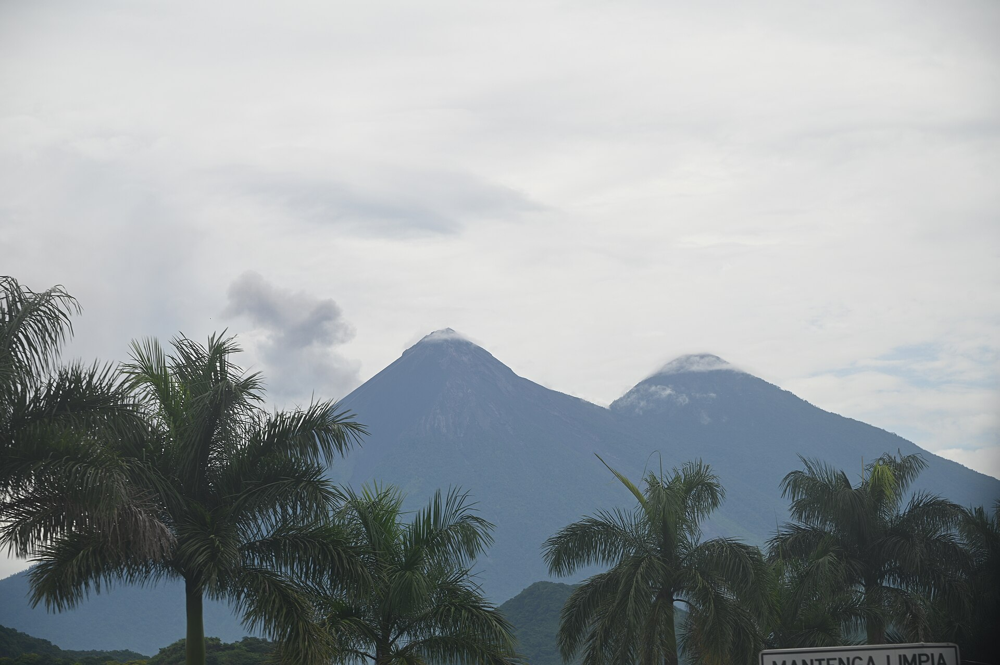
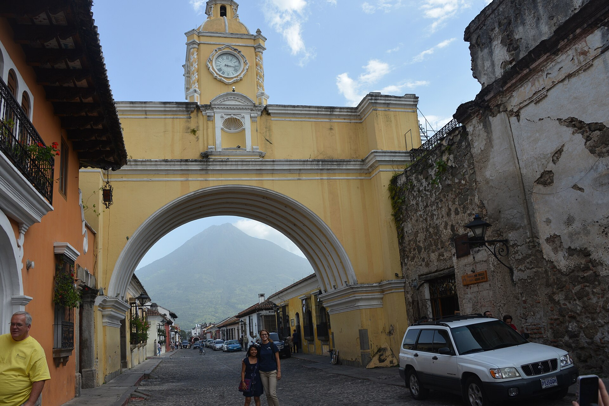
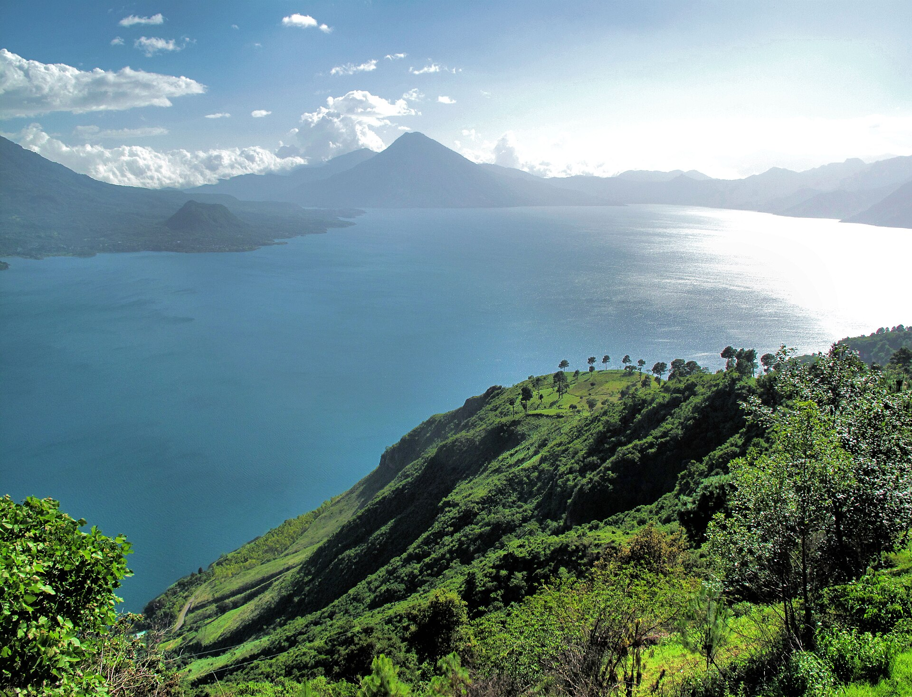
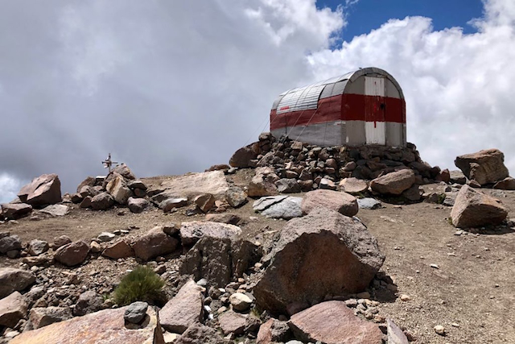
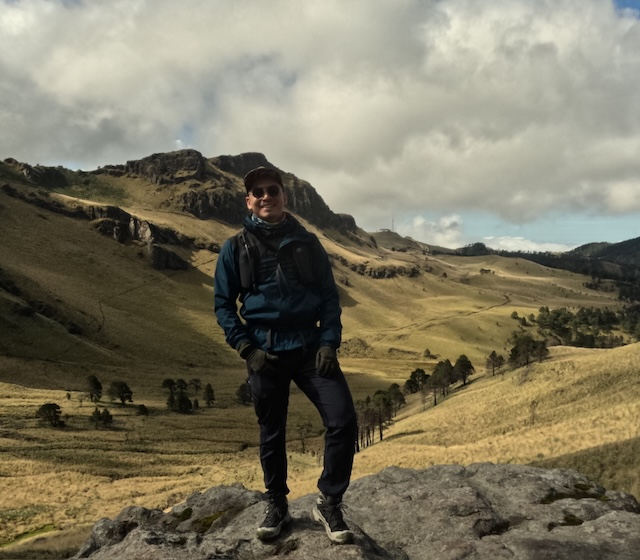
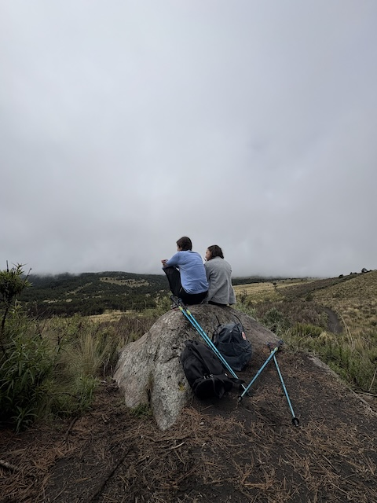

11 al 14 de febrero
Jueves a domingo · extensión a Atitlán hasta el lunes 15
Elegir esta salidaGuatemala · Febrero 2027
Acatenango y Volcán de Fuego con guía local, cabaña, cena caliente y chocolate al amanecer. Cuatro días, cupo limitado, acompañados por el equipo de Hiking Mountain MX.
El Volcán de Fuego hace erupción varias veces por hora. Desde las cabañas del Acatenango lo ves a pocos kilómetros, con el cielo limpio y la montaña en silencio.
Tú te concentras en subir y disfrutar. Nosotros coordinamos guía, cabaña, comidas y traslados, y un equipo de HMMX viaja contigo en todo momento.



Guía local para Acatenango y Fuego
Hospedaje en cabaña en la montaña, de las más cómodas de la ruta
Comidas en el volcán: cena caliente, desayuno de montaña y snacks
Chocolatitos y bebidas calientes durante la noche y el amanecer
Hospedaje en Antigua Guatemala
Transporte terrestre local durante el programa
Entradas y accesos a los volcanes
Acompañamiento del equipo HMMX, protocolo de seguridad y botiquín
Recepción, traslado y check-in. Reunión de bienvenida, revisión de equipo y recorrido cultural por la ciudad colonial. Cena libre.
Salida temprano y ascenso con guía hasta el campamento de cabañas. Cena caliente y noche frente a las erupciones del Volcán de Fuego.
Chocolate caliente al amanecer, cima opcional a 3,976 m y descenso. La ruta hacia el Fuego depende de la actividad del volcán y la decide el guía. Regreso a Antigua.
Desayuno de despedida, tiempo libre en Antigua y traslado para el retorno de quienes regresan a casa.
Traslado al lago, hospedaje y tiempo para recorrerlo. Es un día sin ascenso técnico y no necesitas guía de montaña.
Jueves a domingo · extensión a Atitlán hasta el lunes 15
Elegir esta salidaJueves a domingo · extensión a Atitlán hasta el lunes 22
Elegir esta salidaFebrero es temporada seca en Guatemala: cielos más despejados para ver el Fuego, y noches frías en la montaña.
No pasa nada. Preparamos grupos de entrenamiento con Hiking Mountain MX en CDMX y Edomex para que llegues listo. Escríbenos y te decimos por dónde empezar.
Preguntar por entrenamientosLlevamos a la comunidad HMMX a las montañas de México. Esta vez cruzamos la frontera.




El precio y los cupos se publican en la primera semana de octubre de 2026. Regístrate abajo y te avisamos antes que a nadie.
No. La mayoría compra por su cuenta con las ventanas de llegada y salida que te daremos. Si prefieres no hacerlo tú, podemos gestionártelos como servicio aparte.
Es una persona que carga tu equipo extra en el ascenso. Es opcional y cuesta Q200 por servicio, se paga en destino. Con una mochila ligera normalmente no lo necesitas.
Sí, en febrero las noches en el campamento rondan o bajan de 0 °C. Enviaremos una lista de equipo obligatorio; con ella estarás bien.
La seguridad manda. El guía decide la ruta según la actividad del volcán y el clima, y el Acatenango sigue siendo el mejor mirador del Fuego.
No. La extensión al lago no incluye ascenso técnico.
Te compartiremos la política de cancelación y reembolsos al abrir inscripciones.

Cuéntanos quién eres y te escribimos por WhatsApp con precio, cupo y siguientes pasos.